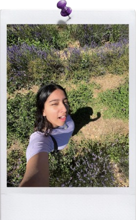

★ Who Am I?
Hello! I'm Lilly Herrera. I'm a sophomore and Digital Media major and I'm currently attending Northwest Vista College. I'm pretty new to web design, I got into it around the beginning of 2024. I'm very much into the old web and am inspired by Geocities and early 2000s web design. I also really like music and films. My favorite bands are Twenty One Pilots and The Beatles, and my favorite movie is Ferris Bueller's Day Off!
★ Why did I make this blog?
Well, I made this blog because it's an assignment for two of my digital media classes combined! I wanted a space where I could write about my interests. I want to talk about The Beatles, 80s new wave, and the history of the goth subculture at the very least.